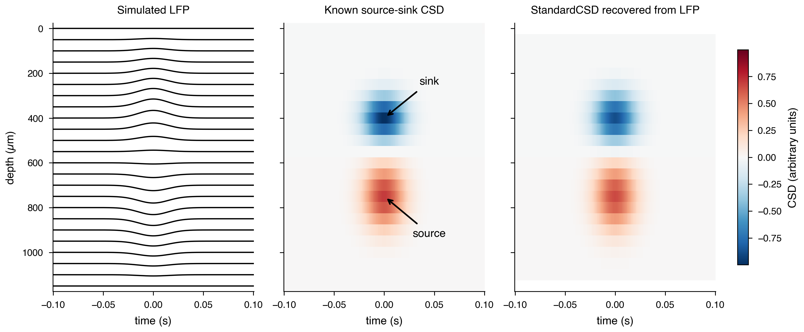
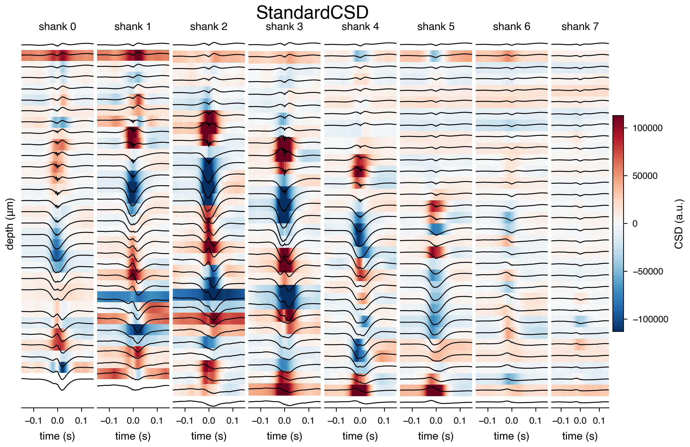
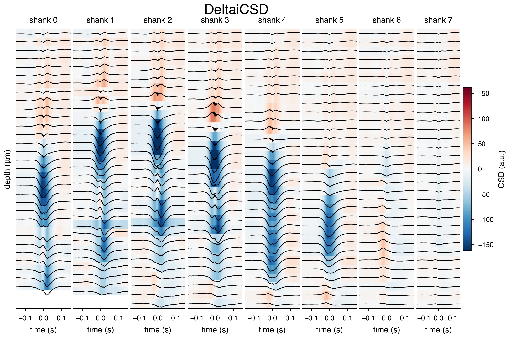
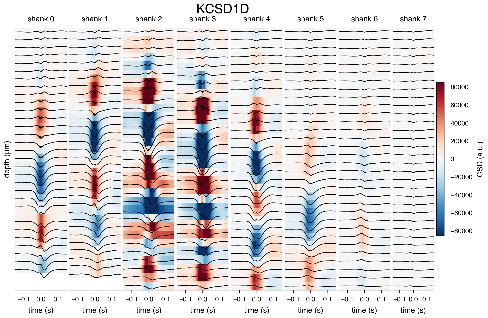
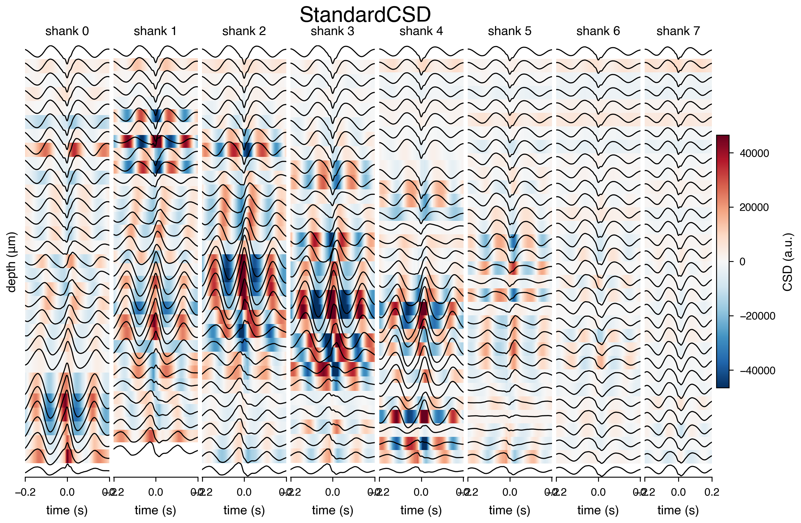
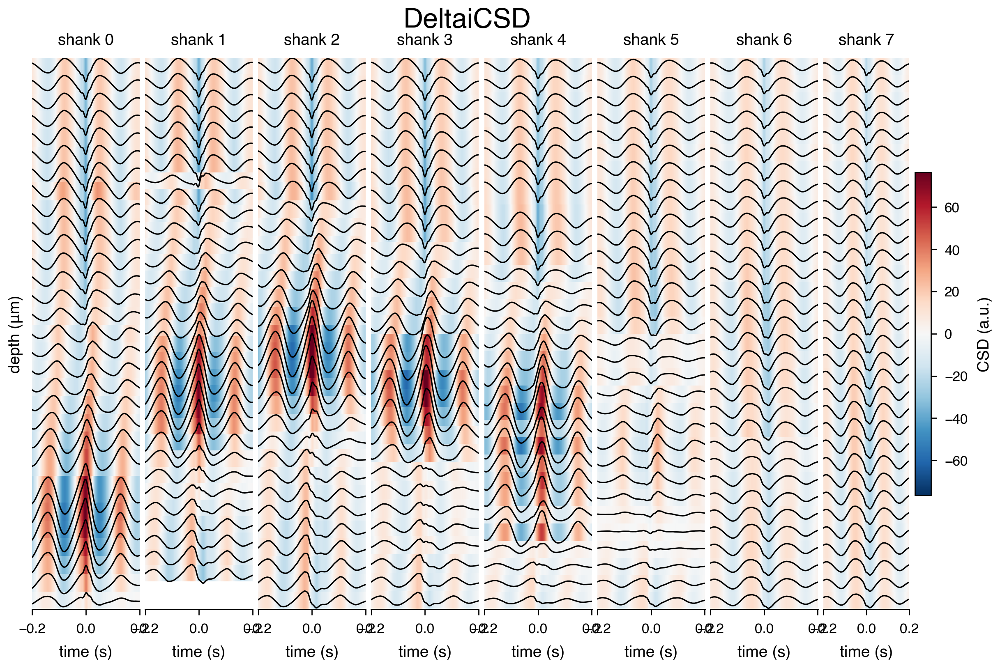
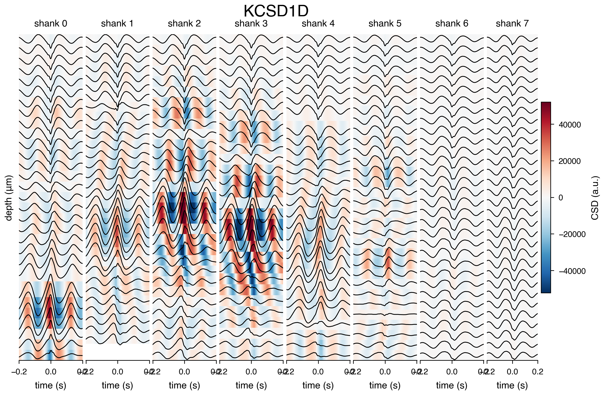
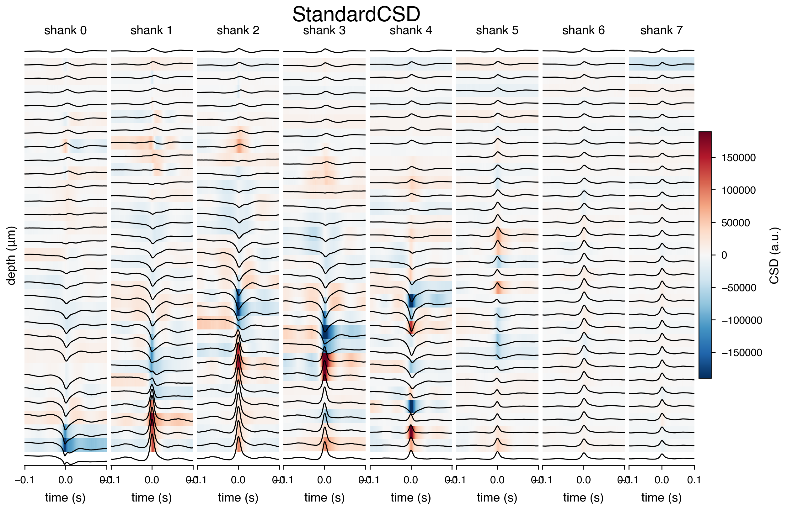
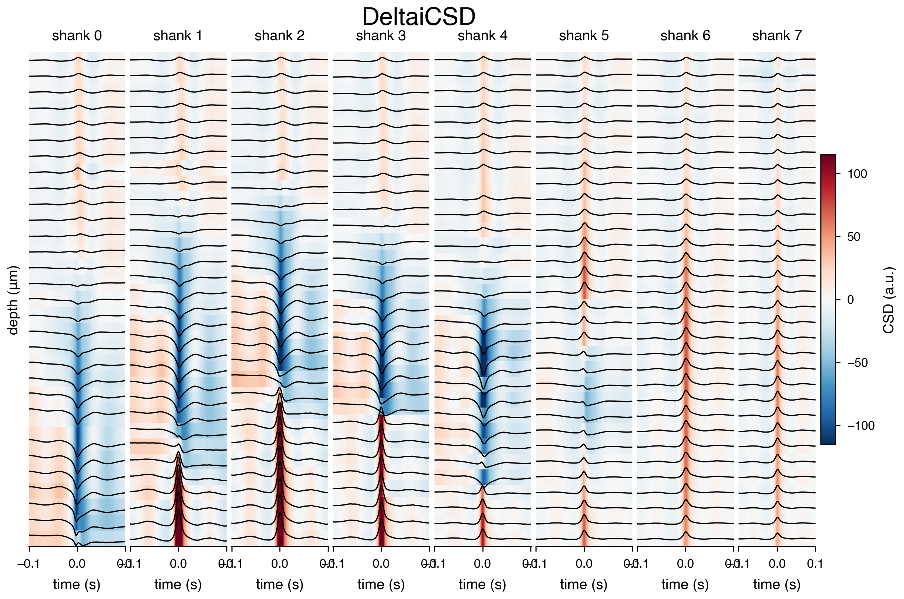
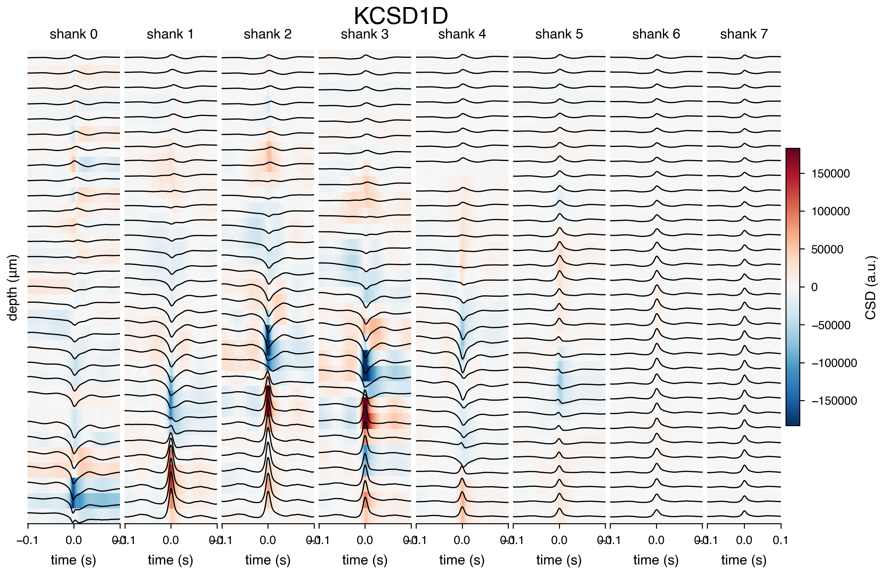

SWR-triggered current source density tutorial¶
Compute a channel-by-time CSD average around pre-computed sharp-wave ripple (SWR) events. The session path matches lfp_loader_tutorial.ipynb.
%reload_ext autoreload
%autoreload 2
%matplotlib inline
%config InlineBackend.figure_format = 'retina'
import matplotlib.colors as mcolors
import matplotlib.pyplot as plt
import matplotlib.ticker as mticker
import nelpy as nel
import numpy as np
import neuro_py as npy
npy.plotting.set_plotting_defaults()
1. What CSD shows¶
Current-source density (CSD) summarizes how voltage changes across probe depth. A current sink is net inward transmembrane current and a current source is net outward current; neither identifies a single neuron or synapse. In this tutorial, negative CSD is blue (sink) and positive CSD is red (source). Because CSD is a spatial derivative, the first and last probe contacts are less reliable: there is no electrode beyond the probe boundary.
This synthetic example begins with a known, balanced source-sink pattern. It generates the LFP that would be measured along one shank, then recovers CSD from that LFP with the same npy.lfp.get_csd function used below for recorded data.
# Simulate a balanced source-sink pair on an evenly spaced 24-contact shank.
n_contacts = 24
spacing_mm = 0.05
depth_mm = np.arange(n_contacts) * spacing_mm
time_s = np.linspace(-0.1, 0.1, 251)
sink = -np.exp(-0.5 * ((depth_mm - 0.40) / 0.07) ** 2)
source = np.exp(-0.5 * ((depth_mm - 0.75) / 0.10) ** 2)
source *= -sink.sum() / source.sum() # zero net current across depth
event_timecourse = np.exp(-0.5 * (time_s / 0.015) ** 2)
true_csd = (sink + source)[:, np.newaxis] * event_timecourse
# Solve -d²V/dz² = CSD with zero-potential boundaries to obtain a synthetic LFP.
laplacian = (
np.diag(np.full(n_contacts - 2, 2.0))
+ np.diag(np.full(n_contacts - 3, -1.0), 1)
+ np.diag(np.full(n_contacts - 3, -1.0), -1)
) / spacing_mm**2
synthetic_lfp = np.zeros_like(true_csd)
synthetic_lfp[1:-1] = np.linalg.solve(laplacian, true_csd[1:-1])
recovered_csd = npy.lfp.get_csd(
"synthetic", synthetic_lfp, shank=0, method="StandardCSD", coords=depth_mm
)
assert recovered_csd.shape == synthetic_lfp.shape
# Only the visualization omits unreliable derivative estimates at the two edges.
recovered_csd_display = recovered_csd.copy()
recovered_csd_display[[0, -1]] = np.nan
depth_um = depth_mm * 1000
csd_limit = np.max(np.abs(true_csd))
csd_norm = mcolors.TwoSlopeNorm(vcenter=0, vmin=-csd_limit, vmax=csd_limit)
fig, axes = plt.subplots(
1,
3,
figsize=npy.plotting.set_size("nature_double", subplots=(2, 3)),
sharex=True,
sharey=True,
dpi=200,
layout="constrained",
)
trace_scale = 35 / np.max(np.abs(synthetic_lfp))
axes[0].plot(time_s, synthetic_lfp.T * trace_scale + depth_um, color="black", lw=0.8)
axes[0].set_title("Simulated LFP")
axes[0].set_ylabel("depth (µm)")
for axis, csd, title in zip(
axes[1:],
(true_csd, recovered_csd_display),
("Known source-sink CSD", "StandardCSD recovered from LFP"),
):
image = axis.pcolormesh(
time_s, depth_um, csd, cmap="RdBu_r", norm=csd_norm, shading="nearest"
)
axis.set_title(title)
axes[1].annotate(
"sink",
xy=(0, 400),
xytext=(0.045, 250),
arrowprops={"arrowstyle": "->"},
ha="center",
)
axes[1].annotate(
"source",
xy=(0, 750),
xytext=(0.045, 930),
arrowprops={"arrowstyle": "->"},
ha="center",
)
for axis in axes:
axis.set_xlabel("time (s)")
axes[0].invert_yaxis()
fig.colorbar(image, ax=axes[1:], label="CSD (arbitrary units)", shrink=0.8, pad=0.03)
<matplotlib.colorbar.Colorbar at 0x217257b42c0>

2. Set the session path¶
This session is expected to contain the pre-computed basename.ripples.events.mat file read by npy.io.load_ripples_events.
basepath = r"Z:\Data\AYAold\AB4\day03"
3. Load SWR epochs¶
The event file supplies each SWR's start, stop, and peak time. Peaks provide a common alignment point for averaging the LFP and CSD.
ripples = npy.io.load_ripples_events(basepath)
if ripples.empty:
raise FileNotFoundError("No ripples.events.mat file was found for this session.")
ripples = nel.EventArray(abscissa_vals=ripples.peaks.to_numpy(), fs=1250)
# restrict to nrem sleep
nrem = npy.io.load_SleepState_states(basepath, return_epoch_array=True).get("NREMstate")
ripples = ripples[nrem]
4. Load all channels from all shank¶
CSD requires several depth-ordered channels. The probe layout selects one shank and supplies its physical channel order and spacing.
probe_layout = npy.io.load_probe_layout(basepath)
# remove last shank here as it contains accelerometer channels (***specific for this basepath***)
shank_layout = probe_layout.query("shank < 8")
bad_channels = npy.io.load_channel_tags(basepath).get("Bad", [])
if bad_channels:
if bad_channels:
bad_channels = bad_channels.get("channels", [])
# normalize to a list for pandas .query / isin semantics
if isinstance(bad_channels, np.ndarray):
bad_channels = np.array(bad_channels) - 1
elif isinstance(bad_channels, (np.integer, int)):
bad_channels = [int(np.array(bad_channels) - 1)]
elif bad_channels is None:
bad_channels = []
shank_layout = shank_layout.query("channels not in @bad_channels")
channels = shank_layout.channels.to_list()
lfp = npy.io.LFPLoader(
basepath,
channels=channels,
ext="lfp",
epoch=[ripples.data[0, :] - 0.15, ripples.data[0, :] + 0.15],
)
times = lfp.abscissa_vals
lfp
<LFPLoader at 0x217259a2c60: 250 signals> for a total of 5:02:05:299 hours
5. Average LFP around SWR peaks¶
Extracting identical windows around valid ripple peaks produces a channel-by-time average that suppresses unrelated activity while retaining the ripple-associated laminar pattern.
avg_signal = npy.process.peth(data=lfp, events=ripples.data[0, :], window=[-0.15, 0.15])
# peth returns positional columns. Restore the physical channel IDs used by LFPLoader
# so they align with the probe-layout channel IDs below.
if avg_signal.shape[1] != len(channels):
raise ValueError("The averaged LFP does not contain every requested channel.")
avg_signal.columns = channels
6. Compute and plot average CSD¶
The native standard CSD estimator takes the second spatial derivative across depth for each time point. Probe-layout depths are stored and plotted in micrometres, then converted to millimetres for CSD estimation. The heatmap highlights sinks and sources aligned to SWR peaks.
StandardCSD is a direct spatial derivative, DeltaiCSD is an inverse model, and KCSD1D uses a spatially regularized kernel estimate. They can differ in amplitude and detail, so compare their spatial pattern rather than their absolute scale. For additional estimators or more control over kernel-CSD parameters, install and use the optional external kCSD-python package separately; it is not a neuro_py dependency.
def plot_csd_by_shank(
basepath,
avg_signal,
shank_layout,
method="StandardCSD",
scale_factor=0.5,
cmap="RdBu_r",
figsize=None,
dpi=200,
get_csd_kwargs=None,
):
"""
Plot average CSD heatmaps with overlaid LFP traces, one subplot per shank,
aligned to real channel depth.
Parameters
----------
basepath : str
Path passed through to npy.lfp.get_csd.
avg_signal : pd.DataFrame
Averaged LFP, channels as columns, time as index.
shank_layout : pd.DataFrame
Must contain columns: shank, channels, y (depth coordinate).
method : str, default "StandardCSD"
CSD method passed to npy.lfp.get_csd (e.g. "StandardCSD", "DeltaiCSD", "KCSD1D").
scale_factor : float, default 0.5
Controls trace amplitude scaling relative to channel spacing.
Smaller = taller traces.
cmap : str, default "RdBu_r"
Diverging colormap for the CSD heatmap.
figsize : tuple, optional
Passed to plt.subplots. Defaults to npy.plotting.set_size("nature_double") if None.
dpi : int, default 200
Figure DPI.
get_csd_kwargs : dict, optional
Extra keyword arguments forwarded to npy.lfp.get_csd (e.g. method-specific params).
Returns
-------
fig, ax : matplotlib Figure and array of Axes
"""
get_csd_kwargs = get_csd_kwargs or {}
if figsize is None:
figsize = npy.plotting.set_size("nature_double")
fig, ax = plt.subplots(
1,
shank_layout.shank.nunique(),
figsize=figsize,
dpi=dpi,
)
# space between subplots
fig.subplots_adjust(wspace=0.05)
# ensure ax is always iterable (in case of a single shank)
ax = np.atleast_1d(ax)
norm = mcolors.CenteredNorm()
all_channels = shank_layout.channels.to_list()
global_max_amp = avg_signal.loc[:, all_channels].abs().to_numpy().max()
min_spacing = (
shank_layout.groupby("shank")
.y.apply(lambda y: np.diff(np.sort(y.abs().to_numpy())).min())
.min()
)
trace_scale = abs(min_spacing / (global_max_amp * scale_factor))
im = None
for i, shank in enumerate(shank_layout.shank.unique()):
shank_df = shank_layout.query("shank == @shank").copy()
shank_df["depth_um"] = shank_df.y.abs()
shank_df = shank_df.sort_values(
"depth_um", ascending=True
) # required ascending for get_csd
channels = shank_df.channels.to_list()
coords_mm = shank_df.depth_um.to_numpy(dtype=float) / 1000.0
assert np.all(
np.diff(coords_mm) > 0
), "coords must be strictly increasing for get_csd"
mean_csd = npy.lfp.get_csd(
basepath,
avg_signal.loc[:, channels].to_numpy().T,
shank=shank,
method=method,
coords=coords_mm,
**get_csd_kwargs,
)
# The second derivative has no electrode outside either boundary, so
# StandardCSD boundary estimates are not interpretable. Keep the LFP
# traces, but mask those two heatmap rows.
plot_csd = mean_csd.copy()
if method == "StandardCSD":
plot_csd[[0, -1]] = np.nan
# negate coords only for display positioning — shallow near 0, deep more negative,
# so shallow renders near the top with a normal (non-inverted) y-axis.
plot_coords = -shank_df.depth_um.to_numpy(dtype=float)
im = ax[i].pcolormesh(
avg_signal.index,
plot_coords,
plot_csd,
cmap=cmap,
norm=norm,
shading="nearest",
)
ax[i].plot(
avg_signal.index,
avg_signal.loc[:, channels] * trace_scale + plot_coords,
color="k",
linewidth=0.6,
)
ax[i].set_title(f"shank {shank}")
ax[i].set_xlabel("time (s)")
ax[i].set_yticks([])
ax[i].spines["left"].set_visible(False)
ax[i].yaxis.set_major_formatter(
mticker.FuncFormatter(lambda val, pos: f"{-val:.0f}")
)
ax[0].set_ylabel("depth (μm)")
fig.colorbar(im, ax=ax[-1], label="CSD (a.u.)", shrink=0.6)
return fig, ax
fig, ax = plot_csd_by_shank(
basepath,
avg_signal,
shank_layout,
method="StandardCSD",
)
# suplot title
fig.suptitle("StandardCSD", fontsize=12, y=0.95)
fig, ax = plot_csd_by_shank(
basepath,
avg_signal,
shank_layout,
method="DeltaiCSD",
)
fig.suptitle("DeltaiCSD", fontsize=12, y=0.95)
fig, ax = plot_csd_by_shank(
basepath,
avg_signal,
shank_layout,
method="KCSD1D",
)
fig.suptitle("KCSD1D", fontsize=12, y=0.95)
Text(0.5, 0.95, 'KCSD1D')



7. Theta-cycle-triggered CSD¶
Theta cycles provide a slower rhythmic alignment than SWR peaks. This section loads the saved theta-cycle peak times, keeps only peaks during the session's theta state, and averages a wider 400 ms LFP window around each peak. The same per-shank CSD plot then shows how laminar current flow changes over the theta cycle.
theta_cycles = npy.io.load_events(basepath, epoch_name="thetacycles", load_pandas=True)
theta_cycles = nel.EventArray(abscissa_vals=theta_cycles.peaks.to_numpy(), fs=1250)
theta = npy.io.load_SleepState_states(basepath, return_epoch_array=True).get("THETA")
theta_cycles = theta_cycles[theta]
theta_cycles
<EventArray at 0x21725b63b60: 1 series (203 segments)> at 1250 Hz
lfp = npy.io.LFPLoader(
basepath,
channels=channels,
ext="lfp",
epoch=[theta_cycles.data[0, :] - 0.2, theta_cycles.data[0, :] + 0.2],
)
times = lfp.abscissa_vals
lfp
<LFPLoader at 0x21725e11e80: 250 signals> for a total of 5:02:05:299 hours
avg_signal = npy.process.peth(
data=lfp, events=theta_cycles.data[0, :], window=[-0.2, 0.2]
)
# peth returns positional columns. Restore the physical channel IDs used by LFPLoader
# so they align with the probe-layout channel IDs below.
if avg_signal.shape[1] != len(channels):
raise ValueError("The averaged LFP does not contain every requested channel.")
avg_signal.columns = channels
fig, ax = plot_csd_by_shank(
basepath,
avg_signal,
shank_layout,
method="StandardCSD",
)
# suplot title
fig.suptitle("StandardCSD", fontsize=12, y=0.95)
fig, ax = plot_csd_by_shank(
basepath,
avg_signal,
shank_layout,
method="DeltaiCSD",
)
fig.suptitle("DeltaiCSD", fontsize=12, y=0.95)
fig, ax = plot_csd_by_shank(
basepath,
avg_signal,
shank_layout,
method="KCSD1D",
)
fig.suptitle("KCSD1D", fontsize=12, y=0.95)
Text(0.5, 0.95, 'KCSD1D')



8. Dentate-spike-triggered CSD¶
Dentate spikes are brief dentate-gyrus population events. Here we load the saved DS2 detector peaks, retain events occurring during NREM sleep, and average 200 ms LFP windows around them. Comparing this CSD pattern with the SWR and theta results helps identify event-specific laminar sinks and sources.
dentate_spikes = npy.io.load_events(basepath, epoch_name="DS2", load_pandas=True)
dentate_spikes = nel.EventArray(abscissa_vals=dentate_spikes.peaks.to_numpy(), fs=1250)
dentate_spikes = dentate_spikes[nrem]
dentate_spikes
<EventArray at 0x2172640d6a0: 1 series (61 segments)> at 1250 Hz
lfp = npy.io.LFPLoader(
basepath,
channels=channels,
ext="lfp",
epoch=[dentate_spikes.data[0, :] - 0.1, dentate_spikes.data[0, :] + 0.1],
)
times = lfp.abscissa_vals
lfp
<LFPLoader at 0x2172650c320: 250 signals> for a total of 5:02:05:299 hours
avg_signal = npy.process.peth(
data=lfp, events=dentate_spikes.data[0, :], window=[-0.1, 0.1]
)
# peth returns positional columns. Restore the physical channel IDs used by LFPLoader
# so they align with the probe-layout channel IDs below.
if avg_signal.shape[1] != len(channels):
raise ValueError("The averaged LFP does not contain every requested channel.")
avg_signal.columns = channels
fig, ax = plot_csd_by_shank(
basepath,
avg_signal,
shank_layout,
method="StandardCSD",
)
# suplot title
fig.suptitle("StandardCSD", fontsize=12, y=0.95)
fig, ax = plot_csd_by_shank(
basepath,
avg_signal,
shank_layout,
method="DeltaiCSD",
)
fig.suptitle("DeltaiCSD", fontsize=12, y=0.95)
fig, ax = plot_csd_by_shank(
basepath,
avg_signal,
shank_layout,
method="KCSD1D",
)
fig.suptitle("KCSD1D", fontsize=12, y=0.95)
Text(0.5, 0.95, 'KCSD1D')


